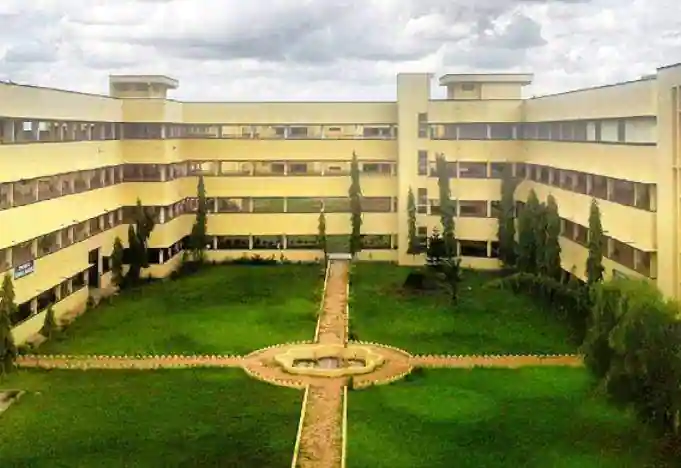
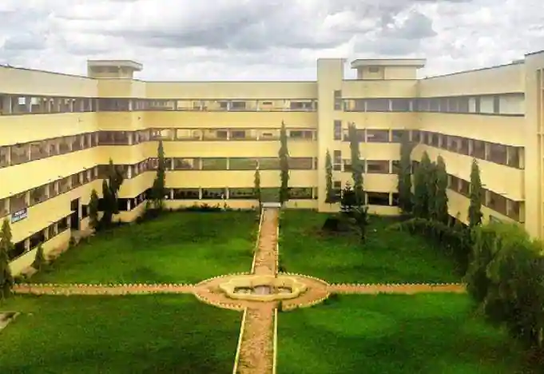

About Us
Prasad V Potluri Siddhartha Institute of Technology (PVPSIT) is a premier educational institution dedicated to providing quality education in the field of engineering and technology. The college focuses on the overall development of students, preparing them for a successful career in the industry.
Library Facility
The college has a well-stocked library with a vast collection of books, journals, and research papers. The library is open to students and faculty members for reference and study purposes, offering a quiet environment to enhance learning.
Sports Facility
PVPSIT promotes the physical fitness and well-being of its students through a variety of sports and recreational activities. The campus features sports facilities for indoor and outdoor games such as cricket, football, basketball, and badminton. Regular sports events and competitions are organized to encourage healthy competition and teamwork.

Meditation and Wellness Facility
Our campus is dedicated to the mental and physical wellness of students. We have dedicated spaces for meditation and yoga, helping students reduce stress and stay focused on their academic and personal growth. The college regularly conducts wellness workshops to support the holistic development of students.

Beautiful Environment and Greenery
PVPSIT is located in a serene and green environment, with lush landscapes and well-maintained gardens. The peaceful atmosphere on the campus creates a conducive learning environment, making it an ideal place for academic pursuits and personal reflection. The natural beauty of the surroundings offers a refreshing escape from the hustle and bustle of city life.
 

Placements
The college has an excellent placement record, with top companies from various industries recruiting students every year. The dedicated Placement Cell works tirelessly to prepare students for interviews and internships, ensuring they are industry-ready. Regular placement drives and training sessions are held to improve the employability of students.
Faculty
Our faculty members are highly qualified and experienced in their respective fields. They not only impart academic knowledge but also provide guidance and mentorship to help students achieve their career goals. The faculty plays a vital role in shaping the academic and professional futures of students at PVPSIT.